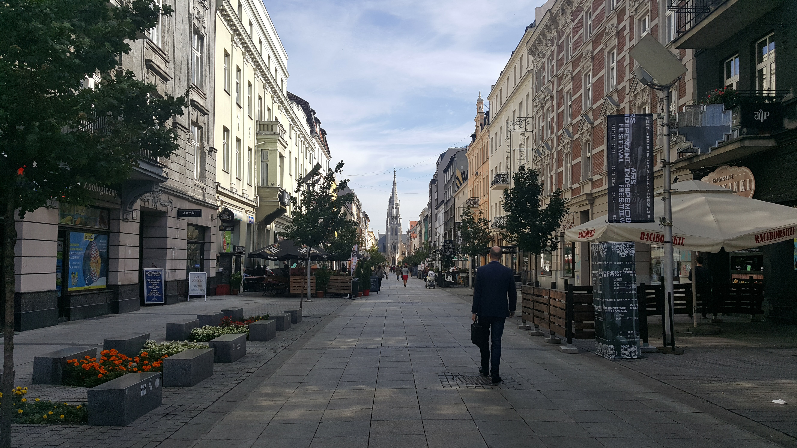
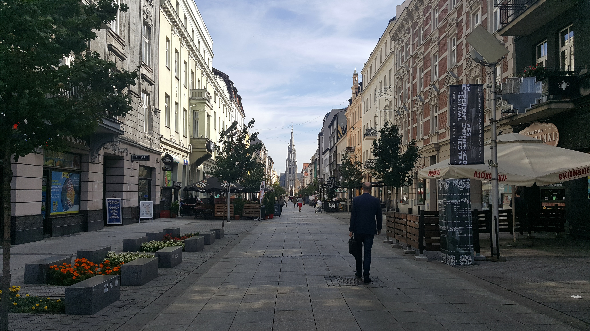

Katowice Experience
Já conhecida por um de nos a, e com dois colegas nossos, também no projeto de Erasmus na cidade de Katowice, fomos então para mais uma das viagens do nosso percurso. Como a deslocação era relativamente curta até Katowice decidimos aproveitar o dia para trabalhar em projetos, e sair apenas pelo final da tarde, pernoitando por lá para assim ver de noite e de dia toda a beleza da cidade.
Alem de locais maravilhosos como St. Mary's Church, Praça do Mercado (Rynek Katowicki), ou mesmo o Silesian Park, o nosso principal foi de atração foi o Spodek, uma arena multiuso, cujo edifício principal conta com ginásio, pista de gelo, hotel e três grandes estacionamentos. Arquitetonicamente esta arena é fabulosa e realizando-se pouco antes de la estarmos um enorme torneio internacional de jogos eletrônicos, IEM Katowice 2019
 
